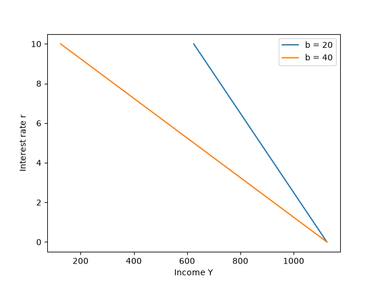
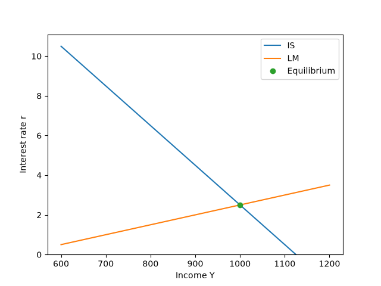
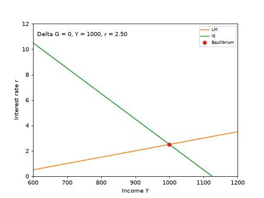

第 8 章: IS 曲線と IS-LM の均衡¶
8.1 この章の地図¶
第 4 章の 45 度線では、投資を一定と置いて、均衡国民所得を求めました。しかし、投資は、利子率に左右されます。利子率が低ければ、借金して投資する企業が増えます。この章では、投資を利子率の減少関数 I = I0 − b·r とし、財市場を均衡させる所得と利子率の組を、線として表します。これが IS 曲線です。さらに、第 7 章の LM 曲線と組み合わせ、連立方程式を np.linalg.solve で解いて、均衡の所得と利子率を求めます。

| 項目 | 内容 |
|---|---|
| 経済学の題材 | 投資の限界効率、IS 曲線（右下がり）、傾きとシフト、財市場の超過供給・超過需要、IS-LM の均衡 |
| 使う Python の機能 | 関数、タプル、numpy.linalg.solve（連立方程式）、第 4 章・第 7 章の関数の再利用 |
| 新しく導入するライブラリ | なし（NumPy は、第 2 章 で導入済み） |
| 完成形 | investment_demand、is_intercept、is_income、is_interest、is_slope、is_shift_for_government、goods_market_state、solve_is_lm、is_lm_residuals |
| ファイル | 実装: lib/chapter08/is_lm.py、lib/chapter08/plot.py（図）／テスト: test/chapter08/test_is_lm.py、test/chapter08/test_plot.py（自分で書くときは、practice/chapter08/ に、同じ名前で作ります） |
経済学の式とコードの対応¶
| 経済学 | 式 | コード |
|---|---|---|
| 投資関数 | I = I0 − b·r（利子率の減少関数） | investment_demand(interest, autonomous_investment, b) |
| IS 曲線の切片 | A = C0 − c·T + I0 + G | is_intercept(mpc, C0, I0, G, tax) |
| IS 曲線（所得） | Y = (A − b·r) ÷ (1 − c) | is_income(interest, intercept, mpc, b) |
| IS 曲線（利子率） | r = (A − (1 − c)·Y) ÷ b | is_interest(income, intercept, mpc, b) |
| IS 曲線の傾き | −(1 − c) ÷ b | is_slope(mpc, b) |
| 政府支出による右シフト | ΔG ÷ (1 − c) | is_shift_for_government(mpc, delta_government) |
| IS-LM の均衡 | (1 − c)Y + b·r = A と k·Y − h·r = M/P の連立方程式 | solve_is_lm(mpc, b, intercept, k, h, real_money) |
前提とする既存の章¶
| できること | 場所 |
|---|---|
| 45 度線から均衡国民所得 Y = A ÷ (1 − c) を求める | この連載の第 4 章（IS 曲線は、これから導きます） |
| LM 曲線 r = (k·Y − M/P) ÷ h を、関数にする | この連載の第 7 章（この章は、第 7 章の lm_interest と money_demand を使います） |
第 1 シリーズの第 13 章（IS-LM 分析）と題材が重なりますが、この記事は、独立して読めます。
8.2 準備¶
サンプルコードは、リポジトリの apps/macro-basics-programming/python/ にあります。環境の作り方は、第 1 章 の 1.2 節と同じです。
cd apps/macro-basics-programming/python
uv sync
uv run pytest test/chapter08
34 passed
自分でコードを書くときは、practice/chapter08/ を作って、完成形と同じ名前（is_lm.py・test_is_lm.py）のファイルに書きます。テストは、uv run pytest practice/chapter08 で動かします。完成形（lib/ と test/）は、答え合わせ用です。 自分で書き終えてから、開いてください。
8.3 予想する¶
限界消費性向 c = 0.6、独立消費 C0 = 100、独立投資 I0 = 300、政府支出 G = 50、租税 T = 0 の国です。投資の利子感応度は b = 20（利子率が 1 上がると、投資が 20 減る）です。貨幣市場は、k = 0.5、h = 100、実質貨幣供給 M/P = 250 です。
- IS 曲線の切片 A = C0 − c·T + I0 + G は、いくつですか。利子率 r = 2.5 のとき、IS 曲線上の所得は、いくつですか
- IS 曲線と LM 曲線の均衡の、所得と利子率は、いくつですか。その点は、IS の式と LM の式の、両方を満たしますか
- b を 20 から 40 に変えると、IS 曲線の傾きは、急になりますか、緩やかになりますか。限界消費性向 c を、0.6 から 0.8 に変えると、どうですか
- 政府支出が 10 増えると、IS 曲線は、右へ何だけ動きますか
- 点（所得 1100、利子率 2.5）は、財市場で、供給超過ですか、需要超過ですか
- IS 曲線が右へ 25 動くと、均衡の所得も、25 増えますか。それとも、25 より小さいですか
8.4 IS 曲線の考え方¶
投資は利子率の減少関数¶
企業は、投資の限界効率（投資から得られる収益率）が、利子率より大きければ、投資をします。利子率が下がるほど、割に合う投資が増えるので、投資は、利子率の減少関数になります。
I = I0 − b·r
b は、投資の利子感応度です。b が大きいほど、利子率の変化に、投資が、敏感に反応します。
45 度線から IS 曲線を導く¶
第 4 章の 45 度線の式に、この投資関数を入れます。Y = C + I + G、C = c(Y − T) + C0 から、
Y = c(Y − T) + C0 + (I0 − b·r) + G
(1 − c)Y + b·r = C0 − c·T + I0 + G ≡ A
これが IS 曲線です。利子率 r を決めると、財市場を均衡させる所得が、1 つ決まります。
Y = (A − b·r) ÷ (1 − c) r = (A − (1 − c)·Y) ÷ b
利子率が下がる → 投資が増える → 乗数を通じて所得が増える、という流れなので、IS 曲線は右下がりです。所得を横軸、利子率を縦軸にしたときの傾きは、−(1 − c) ÷ b です。
| 傾きが緩やかになる条件 | 理由 |
|---|---|
| 投資の利子感応度 b が大きい | 利子率が少し下がるだけで、投資が大きく増え、所得が大きく増える |
| 限界消費性向 c が大きい | 乗数 1 ÷ (1 − c) が大きく、投資の増加が、所得を大きく増やす |
シフトと、財市場の超過¶
政府支出の増加や減税（A が増えること）は、どの利子率でも、均衡所得を増やすので、IS 曲線は右へシフトします。シフト幅は、乗数の分、ΔG ÷ (1 − c) です。
IS 曲線の右上の点では、同じ利子率で、所得が、均衡より大きく、財の供給超過です。左下の点は、財の需要超過です。
IS-LM の均衡¶
IS と LM が同時に成り立つ点が、IS-LM の均衡です。(Y, r) の連立一次方程式として解きます（NumPy は、第 2 章で導入済み）。
(1 − c)·Y + b·r = A
k·Y − h·r = M/P
8.5 プログラミング¶
Red: 投資と IS 曲線のテスト¶
最初に、手計算できる例で、テストを書きます。関数がまだないので、失敗します（Red）。c = 0.6、b = 20、A = 450 なら、r = 2.5 のとき、Y = (450 − 20 × 2.5) ÷ 0.4 = 1000 です。
import pytest
from lib.chapter04.multiplier import equilibrium_income
from lib.chapter07.money_market import lm_interest
from lib.chapter08.is_lm import (
goods_market_state,
investment_demand,
is_income,
is_interest,
is_intercept,
is_lm_residuals,
is_shift_for_government,
is_slope,
solve_is_lm,
)
MPC = 0.6
B = 20
A = 450
K = 0.5
H = 100
M = 250
def test_投資は利子率の減少関数() -> None:
assert investment_demand(0, 300, B) == 300
assert investment_demand(2.5, 300, B) == 250
assert investment_demand(5, 300, B) < investment_demand(2.5, 300, B)
def test_ISの切片は独立支出の合計() -> None:
assert is_intercept(MPC, 100, 300, 50) == 450
def test_IS曲線上の所得() -> None:
assert is_income(2.5, A, MPC, B) == pytest.approx(1000)
assert is_income(0, A, MPC, B) == pytest.approx(1125)
def test_所得と利子率は逆関数の関係() -> None:
for r in (0, 1, 2.5, 10):
y = is_income(r, A, MPC, B)
assert is_interest(y, A, MPC, B) == pytest.approx(r)
Green: IS 曲線を実装する¶
def investment_demand(interest: float, autonomous_investment: float, b: float) -> float:
"""投資関数 I = I0 − b·r。利子率の減少関数。"""
validate_b(b)
return autonomous_investment - b * interest
def is_intercept(
mpc: float,
autonomous_consumption: float,
autonomous_investment: float,
government: float,
tax: float = 0,
) -> float:
"""IS 曲線の右辺 A = C0 − c·T + I0 + G（利子率に依存しない支出）。"""
return autonomous_consumption - mpc * tax + autonomous_investment + government
def is_income(interest: float, intercept: float, mpc: float, b: float) -> float:
"""IS 曲線: 財市場を均衡させる所得 Y = (A − b·r) ÷ (1 − c)。"""
validate_mpc(mpc)
validate_b(b)
return (intercept - b * interest) / (1 - mpc)
def is_interest(income: float, intercept: float, mpc: float, b: float) -> float:
"""IS 曲線: 財市場を均衡させる利子率 r = (A − (1 − c)Y) ÷ b。"""
validate_mpc(mpc)
_check_b_positive(b)
return (intercept - (1 - mpc) * income) / b
import と補助関数（写すときに足す）
記事の抜粋には、import と、先頭が _ の補助関数・定数を、省いています。完成形のファイルの先頭にある、次の部分を、写してください。
lib/chapter08/is_lm.py
import math
import numpy as np
from lib.chapter01.validation import validate_non_negative, validate_positive
from lib.chapter04.multiplier import validate_mpc
from lib.chapter07.money_market import money_demand, validate_h, validate_k
def _check_b_positive(b: float) -> None:
validate_positive(
b, "投資の利子感応度 b が 0 の IS 曲線は垂直で、利子率が決まらない"
)
def _check_lm_finite(k: float, h: float) -> None:
validate_k(k)
validate_h(h)
if not math.isfinite(h):
raise ValueError("連立方程式のソルバーは、有限の h だけ扱える")
from lib.chapter08.is_lm import is_income, is_interest, is_intercept
a = is_intercept(0.6, 100, 300, 50)
print(a)
print(is_income(2.5, a, 0.6, 20))
print(is_interest(1000, a, 0.6, 20))
450.0
1000.0
2.5
is_income は、利子率から所得を、is_interest は、所得から利子率を求めます。2 つは、逆関数の関係です。
投資の利子感応度が 0 のときは、IS 曲線が垂直になります（利子率が、投資を動かさない）。このとき、所得は求められますが、利子率は決まりません。is_interest と is_slope は、b = 0 を、エラーにします（test_利子感応度が0のISは垂直で利子率を求められない）。第 9 章で、この極端なケースを使います。
45 度線との一致¶
IS 曲線は、第 4 章の 45 度線から導いたものです。利子率ごとに、投資を決めて、第 4 章の equilibrium_income で均衡所得を求めると、IS 曲線の所得と、一致するはずです。
def test_IS曲線は第4章の45度線の均衡所得と一致する() -> None:
for r in (0, 2.5, 5):
investment = investment_demand(r, 300, B)
y45 = equilibrium_income(MPC, 100, investment, 50, 0)
assert is_income(r, A, MPC, B) == pytest.approx(y45)
from lib.chapter04.multiplier import equilibrium_income
from lib.chapter08.is_lm import investment_demand, is_income
for r in (0, 2.5, 5):
investment = investment_demand(r, 300, 20)
y45 = equilibrium_income(0.6, 100, investment, 50, 0)
print(r, y45, is_income(r, 450, 0.6, 20))
0 1125.0 1125.0
2.5 1000.0 1000.0
5 875.0 875.0
IS 曲線は、利子率ごとの 45 度線の均衡を、並べたものです。
傾きとシフト¶
傾きと、政府支出の増加によるシフトを、テストにします。
def test_政府支出が増えるとISは右へ動く() -> None:
assert is_shift_for_government(MPC, 10) == pytest.approx(25)
shifted = is_income(2.5, A + 10, MPC, B)
assert shifted - is_income(2.5, A, MPC, B) == pytest.approx(25)
def is_slope(mpc: float, b: float) -> float:
"""IS 曲線の傾き dr/dY = −(1 − c) ÷ b（所得を横軸、利子率を縦軸にしたとき）。"""
validate_mpc(mpc)
_check_b_positive(b)
return -(1 - mpc) / b
def is_shift_for_government(mpc: float, delta_government: float) -> float:
"""政府支出が ΔG 増えたときの、IS 曲線の右シフト幅 ΔG ÷ (1 − c)。"""
validate_mpc(mpc)
return delta_government / (1 - mpc)
from lib.chapter08.is_lm import is_slope
for mpc, b in ((0.6, 20), (0.6, 40), (0.8, 20)):
print(f"c = {mpc}, b = {b}: 傾き", round(is_slope(mpc, b), 4))
c = 0.6, b = 20: 傾き -0.02
c = 0.6, b = 40: 傾き -0.01
c = 0.8, b = 20: 傾き -0.01
b が大きくても、c が大きくても、傾きの大きさ（絶対値）は小さく、緩やかになります。
財市場の超過供給・超過需要¶
IS 曲線の式の左辺から右辺を引いた値 (1 − c)Y + b·r − A は、財の供給超過を表します。正なら、供給（Y）が、需要（C + I + G）より大きく、IS の右上の点です。
def goods_market_state(
income: float, interest: float, intercept: float, mpc: float, b: float
) -> str:
"""点 (Y, r) での財市場。IS の右上は供給超過、左下は需要超過。"""
validate_mpc(mpc)
validate_b(b)
excess_supply = (1 - mpc) * income + b * interest - intercept
if math.isclose(excess_supply, 0, abs_tol=1e-9):
return "均衡"
return "供給超過" if excess_supply > 0 else "需要超過"
from lib.chapter08.is_lm import goods_market_state, is_shift_for_government
print("ΔG = 10 の右シフト幅:", is_shift_for_government(0.6, 10))
for point in ((1100, 2.5), (900, 2.5), (1000, 2.5)):
print(point, goods_market_state(*point, 450, 0.6, 20))
ΔG = 10 の右シフト幅: 25.0
(1100, 2.5) 供給超過
(900, 2.5) 需要超過
(1000, 2.5) 均衡
IS-LM の均衡を、連立方程式で解く¶
IS の式と LM の式は、(Y, r) の連立一次方程式です。係数の行列を作り、np.linalg.solve で解きます。均衡は、IS と LM の両方の式を満たすはずです。満たさない量（残差）を返す関数を作り、テストで、残差が 0 であることを確かめます。
def test_IS_LMの均衡は所得1000で利子率2_5() -> None:
y, r = solve_is_lm(MPC, B, A, K, H, M)
assert y == pytest.approx(1000)
assert r == pytest.approx(2.5)
def test_均衡はISとLMの両方の式を満たす() -> None:
y, r = solve_is_lm(MPC, B, A, K, H, M)
is_residual, lm_residual = is_lm_residuals(y, r, MPC, B, A, K, H, M)
assert is_residual == pytest.approx(0, abs=1e-9)
assert lm_residual == pytest.approx(0, abs=1e-9)
def solve_is_lm(
mpc: float,
b: float,
intercept: float,
k: float,
h: float,
real_money: float,
) -> tuple[float, float]:
"""IS と LM の連立方程式を解いて、均衡の所得と利子率 (Y, r) を返す。
(1 − c)Y + b·r = A
k·Y − h·r = M/P
"""
validate_mpc(mpc)
validate_b(b)
_check_lm_finite(k, h)
coefficients = np.array([[1 - mpc, b], [k, -h]])
constants = np.array([intercept, real_money])
income, interest = np.linalg.solve(coefficients, constants)
return float(income), float(interest)
def is_lm_residuals(
income: float,
interest: float,
mpc: float,
b: float,
intercept: float,
k: float,
h: float,
real_money: float,
) -> tuple[float, float]:
"""点 (Y, r) が IS の式と LM の式を満たさない量。均衡では、どちらも 0。"""
validate_mpc(mpc)
validate_b(b)
is_residual = (1 - mpc) * income + b * interest - intercept
lm_residual = money_demand(income, interest, k, h) - real_money
return is_residual, lm_residual
from lib.chapter08.is_lm import is_lm_residuals, solve_is_lm
y, r = solve_is_lm(0.6, 20, 450, 0.5, 100, 250)
print(y, r)
print(is_lm_residuals(y, r, 0.6, 20, 450, 0.5, 100, 250))
1000.0 2.5
(0.0, 0.0)
均衡は、所得 1000、利子率 2.5 です。IS の式にも、LM の式にも、ぴったり当てはまります（残差は、どちらも 0）。
ソルバーは、有限の h だけを扱い、k・h が正でないときと、限界消費性向 1 以上、b が負のときは、エラーにします（エラーのテストは、test/chapter08/test_is_lm.py にあります）。h が無限大の、流動性のわなは、次の章で、閉じた式で扱います。
政府支出が増える（IS が右へ）と、所得も利子率も上がり、実質貨幣供給が増える（LM が右へ）と、所得は上がり、利子率は下がります。これも、テスト（test_政府支出が増えると所得も利子率も上がる、test_実質貨幣供給が増えると所得は上がり利子率は下がる）で固定しています。
予想の答え合わせ¶
予想した答えを、プログラムで確かめます。
from lib.chapter07.money_market import lm_interest
from lib.chapter08.is_lm import (
goods_market_state,
is_income,
is_intercept,
is_lm_residuals,
is_shift_for_government,
is_slope,
solve_is_lm,
)
a = is_intercept(0.6, 100, 300, 50)
print("IS の切片 A:", a)
print("r = 2.5 のときの IS 上の所得:", is_income(2.5, a, 0.6, 20))
y, r = solve_is_lm(0.6, 20, a, 0.5, 100, 250)
print("均衡の所得と利子率:", round(y, 4), round(r, 4))
print("LM 上の利子率:", lm_interest(y, 250, 0.5, 100))
residuals = is_lm_residuals(y, r, 0.6, 20, a, 0.5, 100, 250)
print("残差:", [round(v, 9) for v in residuals])
print("b = 40 の傾き:", is_slope(0.6, 40), "（b = 20 は", is_slope(0.6, 20), "）")
print("ΔG = 10 の右シフト幅:", is_shift_for_government(0.6, 10))
print("点 (1100, 2.5):", goods_market_state(1100, 2.5, a, 0.6, 20))
y2, r2 = solve_is_lm(0.6, 20, a + 10, 0.5, 100, 250)
print("ΔG = 10 の均衡:", round(y2, 4), round(r2, 4))
print("均衡の所得の増加:", round(y2 - y, 4))
IS の切片 A: 450.0
r = 2.5 のときの IS 上の所得: 1000.0
均衡の所得と利子率: 1000.0 2.5
LM 上の利子率: 2.5
残差: [0.0, 0.0]
b = 40 の傾き: -0.01 （b = 20 は -0.02 ）
ΔG = 10 の右シフト幅: 25.0
点 (1100, 2.5): 供給超過
ΔG = 10 の均衡: 1020.0 2.6
均衡の所得の増加: 20.0
- 1 つ目の問い: 切片 A は 450（= 100 + 300 + 50）です。r = 2.5 のとき、IS 曲線上の所得は 1000 です
- 2 つ目の問い: 均衡は、所得 1000、利子率 2.5 です。LM の式から求めた利子率も 2.5 で、残差は、IS も LM も 0 です。両方の式を満たします
- 3 つ目の問い: b = 40 の傾きは −0.01 で、b = 20 の −0.02 より緩やかです。c = 0.6 から 0.8 でも、傾きは −0.01 になり、緩やかになります
- 4 つ目の問い: 政府支出が 10 増えると、IS 曲線は、右へ 25（= 10 ÷ 0.4）動きます
- 5 つ目の問い: 点（1100、2.5）は、IS の右上で、財の供給超過です
- 6 つ目の問い: 均衡の所得は、25 ではなく、20 しか増えません（利子率も、2.5 から 2.6 に上がります）。IS が右へ動くと、所得が増えて、貨幣需要が増え、利子率が上がります。利子率の上昇が、投資を減らすので、IS の動きほどには、均衡が右へ動きません。この差が、クラウディングアウトです。次の章で、くわしく扱います
図¶
IS 曲線と、IS-LM の均衡を描く関数を、テストから書きます（test/chapter08/test_plot.py）。線の端点（利子率 0 のとき所得 1125、利子率 10 のとき 625 など）と、均衡点の座標（1000、2.5）が、手計算の値と一致することを、確かめています。
描画のテストと実装（後回しにしても、学習は成り立ちます）
def plot_is_lm_equilibrium(
mpc: float,
b: float,
intercept: float,
k: float,
h: float,
real_money: float,
income_min: float,
income_max: float,
) -> Figure:
"""IS 曲線と LM 曲線を描き、交点（均衡）に印を付ける。"""
incomes = [income_min, income_max]
y_star, r_star = solve_is_lm(mpc, b, intercept, k, h, real_money)
fig, ax = plt.subplots()
ax.plot(incomes, [is_interest(y, intercept, mpc, b) for y in incomes], label="IS")
ax.plot(incomes, [lm_interest(y, real_money, k, h) for y in incomes], label="LM")
ax.plot([y_star], [r_star], "o", label="Equilibrium")
ax.set_xlabel("Income Y")
ax.set_ylabel("Interest rate r")
ax.set_ylim(bottom=0)
ax.legend()
plt.close(fig)
return fig

動かして見る¶
政府支出を 0 から 40 へ増やします。IS 曲線が右へ動き、均衡が LM 曲線に沿って、右上へ動きます（所得も利子率も上がります）。

このアニメーションは、lib/animations/ の関数で作っています（uv run python -m tools.render_animations で、GIF を書き出します）。写経は、不要です。動きを見て、式と図の対応を、確かめてください。
実行結果¶
uv run pytest test/chapter08
34 passed
8.6 規則で言うと¶
- IS 曲線は、利子率ごとの 45 度線の均衡を並べたもの。 投資が利子率の減少関数なので、右下がり。切片 A に、独立消費・独立投資・政府支出が入る
- 傾き −(1 − c) ÷ b。 投資の利子感応度 b が大きいほど、限界消費性向 c が大きいほど、緩やか。
- IS-LM の均衡は、連立方程式の解。 解いたら、両方の式に代入して、残差が 0 かを確かめる
混同しやすい点を、表にまとめます。
| 混同しやすい点 | 違い |
|---|---|
| IS と LM の傾き | IS は財市場で右下がり（利子率が下がると、投資と所得が増える）。LM は貨幣市場で右上がり（所得が増えると、貨幣需要が増え、利子率が上がる） |
| IS の右上と左下 | 右上は、財の供給超過（所得が、均衡より大きい）。左下は、財の需要超過 |
| IS のシフト幅と、均衡の所得の増加 | IS が右へ ΔG ÷ (1 − c) 動いても、均衡の所得は、それより小さくしか増えない（利子率が上がるため） |
このモデルが成り立たない場面¶
- 投資を、利子率だけで説明するのは、単純化です。 実際の投資は、将来の売上の見込みや、企業の資金繰りにも、左右されます（第 12 章）
- 物価は、一定と置いています。 物価が動くと、実質貨幣供給 M/P が動き、LM が動きます（第 10 章の AD-AS 分析）
- b を大きくすると、均衡の所得が、小さくなることがあります。 独立投資 I0 を、一定に保つと、利子率が正のとき、b が大きいほど投資が減るためです（練習問題の「多様」）
8.7 練習問題¶
| 種類 | 問題 |
|---|---|
| 想起 | 本文を閉じて、is_income の最初のテスト（利子率 2.5、切片 450、c = 0.6、b = 20 で、所得 1000）を書いてください |
| 生成 | 解説を見る前に、IS 曲線上で、利子率が 1 下がったとき、所得がいくつ増えるかを返す income_gain_per_interest_cut(mpc, b) を、テストから書いてください。c = 0.6、b = 20 では、いくつですか |
| 多様 | b を 20 から 40 に変えると、均衡の所得は、増えますか、減りますか（A = 450、LM は、これまでと同じ）。先に予想してから、確かめてください |
| 交互 | 第 1 シリーズの第 3 章のリスト内包表記で、b が 10、20、30、40、50 のときの、均衡の所得を、一度に計算してください。b が大きいほど、所得は、減っていますか |
解答（先に自分で取り組んでから、開いてください）
想起:
def test_IS曲線上の所得は1000() -> None:
assert is_income(2.5, 450, 0.6, 20) == pytest.approx(1000)
生成: 利子率が 1 下がると、投資が b 増え、乗数 1 ÷ (1 − c) 倍の所得が増えます。
def income_gain_per_interest_cut(mpc, b):
return b / (1 - mpc)
def test_利子率が1下がると所得はb割る1_cだけ増える() -> None:
assert income_gain_per_interest_cut(0.6, 20) == pytest.approx(50)
y1 = is_income(2.5, 450, 0.6, 20)
y2 = is_income(1.5, 450, 0.6, 20)
assert y2 - y1 == pytest.approx(50)
c = 0.6、b = 20 では、50 です。これは、IS 曲線の傾きの逆数の大きさ（1 ÷ 0.02）です。
多様: IS 曲線は、r = 0 の点（Y = A ÷ (1 − c) = 1125）を軸に、b が大きいほど、寝るように動きます。LM 曲線との交点は、利子率が正の範囲にあるので、IS が寝ると、交点は、左へ動きます。減ると予想できます。
def test_利子感応度が大きいと均衡の所得は減る() -> None:
y20, r20 = solve_is_lm(0.6, 20, 450, 0.5, 100, 250)
y40, r40 = solve_is_lm(0.6, 40, 450, 0.5, 100, 250)
assert y40 == pytest.approx(916.6667, abs=1e-3)
assert y40 < y20
assert r40 < r20
b = 40 では、所得は約 916.67、利子率は約 2.08 です。「投資が利子率に敏感なら、所得が増える」とは、限りません。独立投資 I0 を一定にしているので、利子率が正のとき、b が大きいほど、投資そのものが減るからです。
交互:
def test_利子感応度が大きいほど均衡の所得は小さい() -> None:
bs = [10, 20, 30, 40, 50]
incomes = [solve_is_lm(0.6, b, 450, 0.5, 100, 250)[0] for b in bs]
assert incomes[1] == pytest.approx(1000)
assert incomes == sorted(incomes, reverse=True)
assert len(set(incomes)) == len(incomes)
所得は、約 1055.6、1000、954.5、916.7、884.6 と、単調に減ります。
8.8 振り返り¶
- IS 曲線が右下がりである理由を、「利子率 → 投資 → 乗数 → 所得」の順に、説明できますか
- IS が右へ 25 動いたのに、均衡の所得が 20 しか増えませんでした。この差は、どこから来ますか
8.9 まとめ¶
- 投資を、利子率の減少関数 I = I0 − b·r とし、45 度線から IS 曲線 (1 − c)Y + b·r = A を導いた。c = 0.6、b = 20、A = 450 で、r = 2.5 のとき、Y = 1000
- IS 曲線の傾きは −(1 − c) ÷ b。b が大きいほど、c が大きいほど緩やか。政府支出が ΔG 増えると、IS は ΔG ÷ (1 − c) だけ右へ動く（ΔG = 10 で 25）
- IS と LM の連立方程式を
np.linalg.solveで解き、均衡の所得 1000、利子率 2.5 を得た。両方の式に代入した残差は、0 になる - ΔG = 10 のとき、IS は 25 動くが、均衡の所得は 20 しか増えない（利子率が 2.5 から 2.6 に上がる）。この差が、クラウディングアウト
- 次の章では、財政政策・金融政策の効果を、閉じた式と連立方程式の両方で計算し、第 2 部の到達チェックを行います